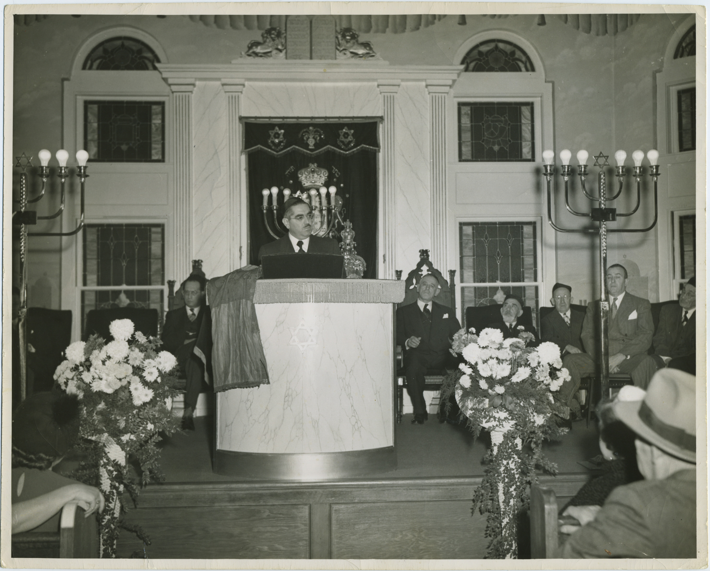

The Baums’ Torah
From a family prayer room in Wittelsberg to a congregation in Providence, 1731–1949.
1731 · A Torah for a newborn son
According to Margot’s great-uncle David Baum, one of his ancestors commissioned a Torah to celebrate the birth of a son. A scribe in Amöneburg completed it in 1731. The child may have been Kauffman David, though his identity is uncertain. The family also commissioned a wimpel, a long strip of cloth embroidered with the son’s Hebrew name that held the Torah closed between readings. David and his wife Paula later told the Providence Jewish Herald that the embroidery had begun three or four years before the scribe finished his work.
David, a teacher of Jewish religion, dated the Torah from a faint inscription on one of its wooden rollers. He read it as a chronogram, a common way of recording a date using the numerical values of Hebrew letters. One possible reading is תצא (tetze, “you shall go forth”). Its three letters add up to 491 (400 + 90 + 1). With the thousands omitted, as was customary, this gives the Hebrew year 5491, which fell in 1730–31. Rabbi Abraham Chill examined the roller with David, and his congregation gave the same date in its 1949 dedication invitation, describing the Torah as 218 years old.

Services in the Baum home
Wittelsberg had few Jewish residents. David recalled that five or six families gathered in the Baum home, where his ancestors led services. How often they could hold a full service may have depended on whether they could gather a minyan, the quorum of ten Jewish men aged thirteen or older required for a public Torah reading.
The Baums may already have been holding services at home before they bought House No. 33 in 1821 or 1822. In that house they set aside one of its thirteen rooms for prayer. The Torah was kept there in an ark, the cabinet from which the scroll was taken for readings.
1934–1939 · From Wittelsberg to New York
In 1934, as Anschel Baum prepared to leave Wittelsberg for the United States, his brother David came from Elmshorn in northern Germany to collect the Torah. David took it home with him. In 1936 he and his wife Paula sent it ahead to their son in New York. The Torah was already there when synagogues across Germany were attacked in November 1938. David and Paula escaped Germany in 1939 and settled in Providence, Rhode Island.
Donation to an Orthodox Synagogue in Providence
On December 11, 1949, the day after David’s eightieth birthday, he and Paula donated the Torah to Congregation Sons of Abraham at Prairie and Potters avenues in Providence. Members of the congregation brought out their own Torahs to welcome it. Herman Austern, the congregation’s vice president, put a new mantle on the Torah, and Isadore Lazarus crowned it. Rhode Island Governor John O. Pastore spoke to the more than seven hundred people who gathered that evening. The congregation’s invitation also listed Providence Mayor Dennis J. Roberts among the speakers.


